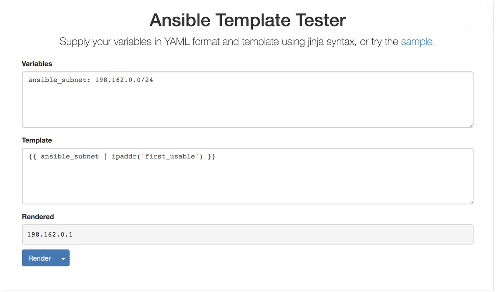
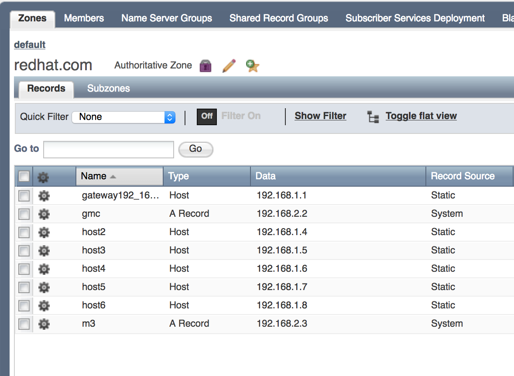
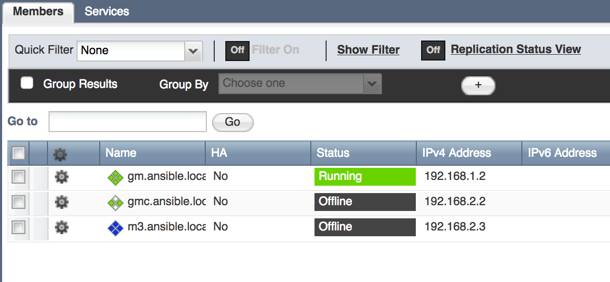

Ansible and Infoblox Roles Deep Dive
Ansible and Infoblox Roles Deep Dive
As Sean Cavanaugh mentioned in his earlier Infoblox blog post, the release of Ansible 2.5 introduced a lookup plugin, a dynamic inventory script, and five modules that allow for Infoblox automation. A combination of these modules and lookups in a role provides a powerful DNS automation framework.
Summary
Today we are going to demonstrate how automating Infoblox Core Network Services using Ansible can help make managing IP addresses and routing traffic across your network easy, quick, and reliable. Your network systems for virtualization and cloud require rapid provisioning life cycles; Infoblox helps you manage those lifecycles. When paired with Infoblox, Ansible lets you automate that work. Ansible's integration with Infoblox is flexible and powerful: you can automate Infoblox tasks with modules or with direct calls to the Infoblox WAPI REST API.
This post will walk you through six real-world scenarios where Ansible and Infoblox can streamline your network tasks:
- Creating a provider in one place that is reusable across a collection of roles.
- Expanding your network by creating a new subnet with a forward DNS zone. Ansible modules for Infoblox make this common two-part task simple.
- Creating a reverse DNS zone, for example, to flag email from any IP
addresses that don't have an associated address name. You must do
this task with calls to the Infoblox API for older versions of
Ansible, but this is now supported functionality in the
nios_zonemodule as of Ansible v2.7. - Reserving a host record for the gateway address of your new subnet with Ansible's powerful Jinja2 templates.
- Creating additional hosts in the subnet using a loop and
host_count. - Managing Infoblox Grids to automate your network at scale, where one Infoblox appliance may not be enough. Grids physically separate your managed network and eliminate single points of failure.
To follow along with these examples on your own Infoblox devices, you'll need to install the dynamic-infoblox Roles and set up your Infoblox credentials as a provider.
Infoblox credentials and the nios_provider
[Any time you use Ansible with Infoblox, invoking an Infoblox
lookup or
module,
you must specify the Infoblox IP, username, and the user's password.
Our Roles call
these credentials, taken together, the
nios_provider. By
creating a nios_provider
dictionary as a group variable, you can apply these values consistently
in all your playbooks and roles, referring to them in a single line
whenever you need them.
*group_vars/all/main.yml* nios_provider: #Infoblox out-of-the-box defaults specified here host: 192.168.1.2 username: admin password: infoblox wapi_version: “v2.7”
Using modules to set up a subnet and forward DNS zone
Once you've got your credentials ready, you can run a playbook that
leverages the
dynamic Infoblox
Role to create a subnet and a forward DNS zone; Ansible modules take
care of this with ease. Creating a subnet is a common network project:
subnets allow an administrator to expand the network, responding to a
new company branch, office, or line of business. Forward DNS zones
establish the single direction mapping of address names to IP addresses.
A new DNS zone may be required for a business to expand its global reach
into an additional country (e.g. .uk) or respond to a merger. The tasks
shown here define ansible_subnet and ansible_zone as
variables, so you can override them each time you create a new subnet.
- name: Create a test network subnet nios_network: network: "{{ ansible_subnet }}" comment: Test network subnet to add host records to state: present provider: "{{ nios_provider }}" - name: "Create a forward DNS zone called {{ ansible_zone }}" nios_zone: name: "{{ ansible_zone }}" comment: local DNS zone state: present provider: "{{ nios_provider }}"
In this example, we've used the default Infoblox View. Infoblox allows multiple Views within a single DNS zone. If you want to route internal traffic to on-premise servers and route external traffic to public cloud servers, you can do that by designing a DNS zone with two DNS Views. This type of setup ensures that traffic to your employee intranet does not burden the servers your customers use, providing better geographic coverage and higher levels of around-the-clock coverage for customers. However, for the simple example above (and subsequent examples), we've stuck to using the default View.
Using the Infoblox API to set up a reverse DNS zone
So far you've seen how to use Ansible modules to automate Infoblox changes. Our next example shows how to use the Infoblox WAPI REST API to automate a task that may not be available in your current version of Ansible. Reverse DNS zones allow a client to look up an address name if they know the equivalent IP address. The importance of reverse zones can be illustrated with a common example: email servers. Incoming traffic from an IP address that does not have an associated address name through reverse DNS can often be flagged as spam. Reverse zones can also help with other use cases, like gathering authentic data about other businesses that visit your websites.
The nios_zone module can
already create a forward DNS zone, but it can only create reverse zones
with the latest version of Ansible. However, you can still automate this
task in older versions of Ansible - just use Ansible to make calls
directly to the WAPI API. You can do this with either the uri module or
a shell script. We recommend the uri module, since it helps capture the
integration more descriptively and enables idempotent calls leveraging
standard REST return codes. Here the uri module serves as a umbrella
module to succinctly capture a single WAPI call within the Ansible
module ecosystem. It is worth noting that the WAPI API operates much
like Ansible modules: JSON in and JSON out. If you express the body of
the API call in yaml, it is easy to use a Jinja2 filter (a topic we will
revisit in depth) to convert it to JSON at runtime.
- name: Create a reverse DNS zone to complement forward zone uri: url: https://{{ nios_provider.host }}/wapi/{{ wapi_version }}/zone_auth method: POST user: "{{ nios_provider.username }}" password: "{{ nios_provider.password }}" body: "{{ reverse_zone_yml | to_json }}" #201 signifies successful creation #400 signifies existing entry #both signify a successful WAPI call status_code: 201,400 headers: Content-Type: "application/json" validate_certs: no register: reverse_dns_create changed_when: reverse_dns_create.status == 201 vars: reverse_zone_yml: fqdn: "{{ ansible_subnet }}" zone_format: "IPV4"
If you establish the subnet, forward zone, and reverse zone before creating any host records, each host record you create in that forward zone automatically creates the corresponding reverse zone entry! With a network, forward zone, and reverse zone defined, the stage is set to start creating host records for your new subnet.
Using a Jinja2 template to reserve the gateway address
When you start creating host records, you want to reserve the first (or last) host record in the zone as the gateway address, the address that forwards packets of data destined for an IP address outside of the immediate network. As mentioned earlier, you can use Jinja2 filters to manipulate data by calling a short python function on it; the Jinja2 filter syntax effectively acts as a linux pipe. Jinja2 filters are a way to quickly manipulate data and in this case we use two of them (see example below) to adhere to Infoblox gateway address naming conventions. It is important to note that defining the gateway address name relative to the subnet avoids gateway address name overwrites because it is common for each subnet to have its own gateway address.
- name: Create a host record for the gateway address nios_host_record: name: “gateway{{ ansible_subnet | ipaddr(‘first_usable’) | replace(".","_") }}.{{ ansible_zone }}” ipv4: - address: "{{ gateway_address }}" state: present provider: "{{ nios_provider }}"
This task builds your gateway host name step by step with this complex
Jinja2 expression. The Ansible-packaged
ipaddr filter
is versatile - it is capable of achieving a larger number of routine IP
address manipulations. For example, if your IP range is 192.168.1.0/24
and your ansible_zone is
ansible.local, the filter in the task above creates a name in a single
line:
- Expression starts with "gateway"
- The section in the does a few things:
a. Retrieves the templated value of ansible_subnet
ansible_subnet => 198.168.1.0/24b. Uses the retrieved ansible_subnet value and supplies it to the ipaddr('first_usable') filter plugin to obtain first usable IP192.168.1.0/24 | ipaddr('first_usable') => 192.168.1.1c. Formats the resulting IP with underscores instead of dots192.168.1.1 | replace('.', '_') => 192_168_1_1d. Adds a.separator before the subnet value e. Retrieves the templated value of ansible_zoneansible_zone => ansible.local
The gateway host name, passing the values listed above through the example template, would be:
gateway192_168_1_1.ansible.local
Jinja2 filters are a complex Ansible topic; you should have a solid Ansible foundation before building your own Jinja2 filters. As you start creating filters, you can test expected values locally, or leverage Sivel's Ansible Template Tester to see the results of your filters before you use them in a playbook or role.

Using loops and host_count to generate host records
Once your gateway address is reserved, you can use a loop to generate a
known number of additional host records. In a real-world scenario, you
would probably generate groups of servers within the subnet (for
example, database servers, application servers, etc.). For this simple
demo, you can define a loop that will dynamically generate generic host
records based on a user-supplied host_count value. This
demo shows the power of nios_next_ip lookup
plugin, which can obtain a single next available IP or a range of next
available IPs to assign. In a Playbook with both tasks (the one above
that creates a host record for the gateway address and the one below
that generates host records), if you don't define a
host_count, the playbook won't create any additional host records;
just the gateway address will be created.
#Generating records this way should be for demo purposes #Normal scenario would be to iterate over a dictionary/list of hosts or populate via a static csv file - name: “Dynamically generate {{ host_count }} host records at next available ip in {{ ansible_subnet }}” include_tasks: host_record_generation.yml loop_control: loop_var: count with_sequence: start=1 end={{ host_count }} when: host_count is defined
If you generate host records with Ansible based on a user-supplied host count, wouldn't looping through a host count potentially cause indexing issues on a second run? Unfortunately it does, but keeping a total count of generated hosts solves this problem. One approach is to maintain a static total host count file on the control node viewed as a source of truth. By leveraging Ansible's lookup plugin feature to retrieve its contents, each time a host is generated the count in this file is incremented so consequent role executions (especially those automated in different subnets) do not overwrite each other's records!
Generating host records this way is different than generating them with
naming conventions like most enterprises do, but it is an easy
out-of-the-box method using the nios_next_ip lookup to
create some records across different zones and/or subnets. Infoblox also
supports a csv record import feature for static records.

Predefine Infoblox Grids with Ansible
In the first four scenarios, you've seen how Ansible works with Infoblox at the level of hosts and subnets. What can Ansible do with Infoblox at scale? Automating a single Infoblox instance provides value, but production Infoblox systems are often designed in a Grid. The Infoblox website explains the full power of Infoblox Grid technology. The Infoblox Grid establishes a distributed relationship between individual or paired appliances to remove single points of failure and other operational risks inherent in legacy DNS, DHCP, and IP Address Management infrastructure. Each Grid contains one Grid Master and a varying number of additional Grid Members and/or Grid Master candidates. Grid Members only contain a portion of the Infoblox database needed to do their job. Grid Master Candidates, on the other hand, have a real-time full copy of the Grid Master's database to provide disaster recovery functionality. You can use our Ansible Roles to predefine new Grid Master Candidates and Grid Members like this:
- name: Predefine a new Grid Master Candidate hosts: localhost connection: local roles: - role: predefineGridmasterCandidate master_candidate_name: gmc.ansible.local master_candidate_address: 192.168.2.2 master_candidate_gateway: 192.168.2.254 master_candidate_subnet_mask: 255.255.255.0 - name: Predefine a new Grid Member hosts: localhost connection: local roles: - role: predefineGridMember member_name: m3.ansible.local member_address: 192.168.2.3 member_gateway: 192.168.2.254 member_subnet_mask: 255.255.255.0

As you can see from these five examples, Ansible and Infoblox work together to manage your network infrastructure and the traffic it carries quickly, easily, and reliably. Ansible builds on the robust capabilities of the Infoblox WAPI API. Using Ansible modules and direct calls to the WAPI API, you can write reusable Ansible Roles and Playbooks that can be quickly adapted to handle separate networks. If you'd like, you can start by customizing the roles in the ansible-networking repository, which connect all of the Ansible concepts discussed in today's post.